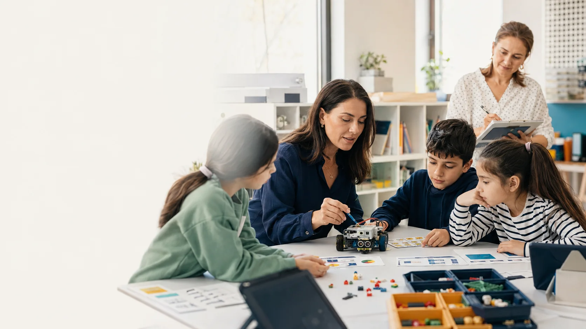
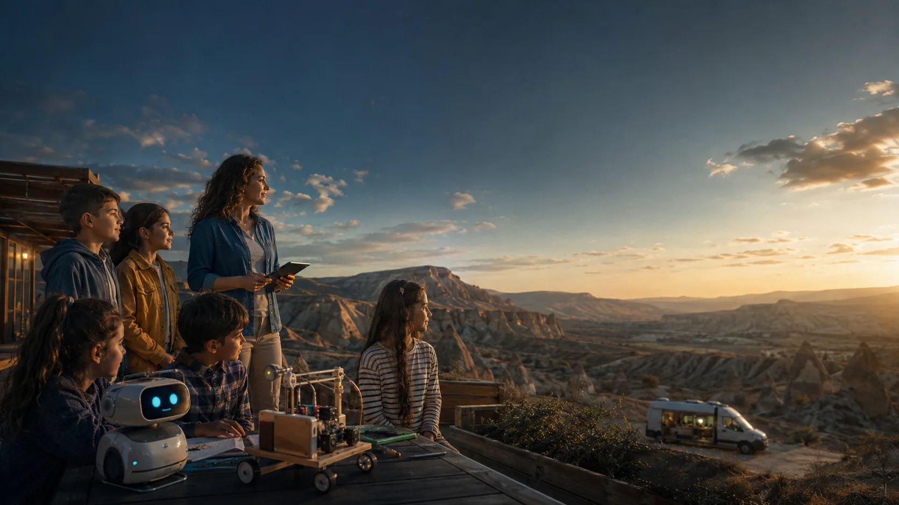

Merakı bir soruya dönüştür
“Robot neden yolunu bulamadı?” gibi somut bir problem, çocuğu hikâyenin çözüm ortağı yapar.
ESKİŞEHİR’DEN GELECEĞE UZANAN BİR ÖĞRENME YOLCULUĞU
Çocukların bir hikâyeyle keşfettiği, kodlarla denediği ve kendi elleriyle ürettiği bütünleşik eğitim ve teknoloji ağı.
Öğrenme ekranda başlayabilir.
Hikâyesi orada bitmez.
01 / PROJENİN AMACI
Kod Kaşifleri; çocuğun bir problemi fark etmesini, çözümünü adımlara ayırmasını, denemesini ve hatasından öğrenmesini destekler. Yazılım, robotik ve yapay zekâ bu yolculukta düşünme ve üretme araçlarıdır.
“Robot neden yolunu bulamadı?” gibi somut bir problem, çocuğu hikâyenin çözüm ortağı yapar.
Çocuk komutları kurar, sonucu gözlemler, eksik adımı bulur ve yeni bir çözümü sınar.
Ekrandaki komut; sınıf parkuruna, bir sensöre, bir robota veya yerel bir probleme yönelik prototipe dönüşür.
Hedef; algoritmik düşünme, problem çözme, hata ayıklama, iş birliği ve yapay zekâyı sorgulayarak kullanma becerilerini birlikte geliştirmektir.
02 / ÖĞRENME AĞI
İçerik, uygulama ve saha aynı öğrenme hedefinde buluşur. Basılı materyaller ve yetişkin rehberliği her aşamayı destekler.
Problemi ve hikâyeyi açar. Çocuk izledikten sonra doğrudan ilgili göreve geçer.
Hikâye kurgusu ↗Yaşa uygun görevleri, kişisel robot rehberi ve öğrenme portfolyosunu bir araya getirir.
Deneyimi aç ↗Göreve bağlı, kademeli destek verir. Çocuğun yerine çözmek yerine düşünmesine yardım eder.
İpucu yaklaşımı ↗Komutları sensör, motor ve fiziksel parkurlarla gerçek bir çıktıya dönüştürür.
Üretim ortamı ↗Taşınabilir kitler, eğitim ve mentor desteğiyle farklı okullara erişir.
Saha modeli ↗Deneme, ipucu, fiziksel transfer ve öğretmen gözlemini birlikte değerlendirir.
Gelişimi izle ↗03 / NASIL ÖĞRENİLİR?
Her tema aynı anlaşılır akışı izler. Uygulama sonundaki fiziksel görev, öğrenmenin günlük hayata aktarılmasını sağlar.
Mini hikâyedeki problemi fark et.
Komutları kur, çalıştır ve düzelt.
Kartlarla, robotla veya nesnelerle uygula.
Çözümünü ve neyi değiştirdiğini paylaş.
Hikâyede susuz kalan bir fide fark edilir. Uygulamada nem değeri okunur ve sulama koşulu belirlenir. Atölyede sensörlü düzenek denenir; öğretmen çocuğun gerekçesini gözlemler.
04 / KİMLER İÇİN?
4–5 yaşta yetişkin eşliğinde hazırlık; 6–12 yaşta temel becerilerden bağımsız üretime uzanan katmanlı bir yapı.
Yön, sıra, örüntü ve neden–sonuç. Büyük görseller, az seçenek, kısa görev ve yetişkin eşliği.
Örnek: Yön kartlarıyla sınıfta bir yol oluşturmak.
Hazırlık deneyimi ↗Görsel algoritma, blok kodlama, döngü, koşul ve sanal robotla somut sonuçlar.
Örnek: Bir robotu komutlarla hedefe ulaştırmak.
Temel deneyim ↗Sensör, otomasyon, yapay zekâ okuryazarlığı, çok adımlı görevler ve takım projeleri.
Örnek: Nem verisiyle bir sulama kuralı tasarlamak.
Derinleşme deneyimi ↗05 / İÇERİK OMURGASI
Her tema; iki mini bölüm, dijital görevler, ekransız etkinlik, robotik üretim, öğretmen akışı ve ölçme kanıtı ile planlanır. Tema kartını açarak somut çıktısını inceleyebilirsin.
Temalar P-03 içerik şartnamesindeki sırayı izler. Demo içinde seçili temaların örnek görevleri çalışır; 24 animasyonun üretimi proje kapsamındaki bir sonraki iştir.

KONSEPT GÖRSELİ · GERÇEK PİLOT KAYDI DEĞİLDİR06 / ANİMASYON VE HİKÂYE
İlk fazda 12 temaya bağlı 24 mini animasyon planlanır. Yaklaşık 1–2 dakikalık her bölüm, çocuğun çözebileceği somut bir soruya açılır.
Robot bir engelle karşılaşır; çocuk neyin değişmesi gerektiğini düşünür.
Aynı beceri yeni bir bağlamda kullanılır ve fiziksel göreve geçilir.
Demo hikâye kartları, uygulama akışını göstermek için hazırlanmış örnek senaryolardır; tamamlanmış çizgi film bölümleri değildir.
Örnek hikâyeyi aç ↗07 / UYGULAMA DENEYİMİ
Görevleri tamamla, ipuçlarını dene, robotunun rengini seç. Öğretmen görünümüne geçerek görev ata ve fiziksel etkinliği doğrula; gelişimin veli ekranına nasıl yansıdığını gör.
Bir komut ekle. Sonucu gözlemle. Gerektiğinde düzelt. Her deneme, bir öğrenme adımı.
Keşif alanına gir ↗Hesaplar, okullar ve senaryolar temsilidir. İlerleme yalnız bu tarayıcıda saklanır. Yapay zekâ ipuçları hazır kurallarla canlandırılır.
08 / KONTROLLÜ YAPAY ZEKÂ
Rehber, yalnızca yürütülen görevin sınırları içinde destek verir. Açık sohbet yerine kontrollü bir ipucu merdiveni kullanılır; çocuğun temel modele doğrudan erişmesi planlanmaz.
Gereken destek; çocuğun denemesi, hata türü ve öğretmenin değerlendirmesiyle uyarlanır. Kararların gerekçesi yetişkinlere görünür olur.
09 / SINIFTAN SAHAYA
Robotik sınıflar ve gezici atölye; dijital öğrenmeyi sensör, motor, parkur ve takım çalışmasıyla birleştirir. Erişim planı okulun imkânına göre şekillenir.

Çalışma yüzeyleri, kodlama cihazları, eğitim robotları, sensör ve motorlar; güvenli şarj, depolama ve bakım düzeniyle birlikte planlanır.
Taşınabilir kit, yerel içerik, enerji ve mentor desteği okula ulaşır. Ziyaret öncesi hazırlık, güvenli kurulum ve ziyaret sonrası takip birlikte yürütülür.
Ürün hedefi; içerikleri önceden indirmek, bağlantı yokken görevi sürdürebilmek ve gerekli kayıtları bağlantı geldiğinde güvenle eşitlemektir.
Bir köy okulunda görev önce basılı kartlarla kurulur. Mobil atölye ziyaretinde robotla denenir. Öğretmen, ekip ayrıldıktan sonra aynı hedefi sınıf materyalleriyle sürdürür.
10 / ÖĞRETMEN VE AİLE
Öğretmen sınıf ritmini, güvenliği ve fiziksel üretimi yönetir. Aile, evde kısa ve somut etkinliklerle öğrenmeyi destekler.
12 modüllük gelişim programı; görev akışı, robotik kurulum, güvenlik, gözlem ve değerlendirmeyi kapsar. Uygulamalı prova, mentorluk, yedek öğretmen ve saha desteğiyle devam eder.
Öğrenme günlüğü, komut kartları, görev sayfaları, proje ve sunum kartları yaşa göre hazırlanır. Aileye çocuğun gelişimini anlaşılır bir dille özetleyen öneriler sunulur.
11 / PİLOT UYGULAMA
Kurumsal aktivasyon ilk 90 günlük hazırlıkla ele alınır. Pilotun açılış tarihi; okul, ekip, donanım, çocuk güvenliği ve öğretmen hazırlığı tamamlandığında kesinleşir.
Uygunluk ve taahhüt
Asıl ve yedek ekip
Donanım ve çevrimdışı hazırlık
Veri, izin ve erişim
Öğretmen ve içerik eşleşmesi
Kritik eksiklerin kapanması
Kullanıcı, cihaz, kit ve rol doğrulaması; ilk görev ve erken destek.
Çıktı: Açılış tutanağı ve ilk bulgularAnimasyon, uygulama ve robotik ritmi; öğretmen koçluğu.
Çıktı: 4. hafta okul durum kartıSensör ve motor görevleri, takım projesi, mentor ve mobil atölye desteği.
Çıktı: 8. hafta ara uygulama raporuÖlçme, uyarlama, devamlılık ve açık bulguların kapatılması.
Karar: Devam et · Uyarla · Daralt · DurdurOkul, katılımcı ve kit sayıları ile kesin başlangıç tarihi kurum kararlarıyla belirlenecektir. Bu sayfa gerçekleşmiş bir pilotu duyurmaz.
12 / ÖLÇME VE BEKLENEN KATKI
Çocuk kendi önceki durumuyla karşılaştırılır. Dijital görev sonucu, fiziksel transfer ve öğretmen gözlemi birlikte değerlendirilir; açık çocuk sıralaması kullanılmaz.
Kısa görevlerle ilk beceri görünümü.
Deneme, hata türü, süre ve ipucu kullanımı.
Gerçek üretim, açıklama ve öğretmen kanıtı.
Toplulaştırılmış gelişim ve erişim göstergeleri.
Çocuklarda üretken teknoloji kullanımı, öğretmenlerde uygulama kapasitesi, okullar arasında erişim desteği ve yerel problemlere yönelik öğrenci projeleri. Etki ve sürdürülebilirlik pilot verileriyle değerlendirilecektir.
13 / ÇOCUK GÜVENLİĞİ
Proje; kapalı görev alanı, az veri, yetişkin rehberliği ve kontrollü görünürlük üzerine tasarlanır.
Açık sohbet, çocuklar arası mesajlaşma, reklam ve sonsuz içerik akışı planlanmaz.
Kimlik ve öğrenme kayıtları ayrıştırılır. Görünürlük, rol ve amaçla sınırlandırılır.
İçerik ve yapay zekâ desteği pedagojik değerlendirmeden geçer. Öğretmenin gözlemi karar sürecindedir.
Görev tamamlandığında fiziksel üretim ve kısa yansıtma önerilir. Süre ve kullanım niteliği birlikte izlenir.
Fotoğraf, ses, ürün ve yayın izinleri ayrı ele alınır. Demo kişisel veri veya dosya yüklemesi istemez.
Yaşa, okuma ve motor becerilere göre büyük kontroller, alternatif anlatımlar ve yetişkin desteği.
14 / UYGULAMA ORGANİZASYONU
Proje dosyalarındaki iş alanları; içerik, yazılım, saha, öğretmen ve ölçme bileşenlerinin aynı hedefe hizmet etmesini sağlar. Kesin kurum görevlendirmeleri başlangıç kararında belirlenir.
Ortak robot karakter ve görsel dünya; senaryo, storyboard, animatik, ses, 24 mini bölüm, erişilebilirlik ve uygulamaya geçiş.
Çocuk, öğretmen, veli ve kurum alanları; görev motoru, robot rehberi, çevrimdışı çalışma, güvenli eşitleme ve öğrenme analitiği.
12 tema; üç yaş katmanı; dijital, ekransız ve robotik görevler; öğrenci, öğretmen, aile ve saha setleri.
Sınıf altyapısı, cihaz, kit, sensör, motor, parkur; güvenli şarj, depolama, envanter ve bakım.
Araç ve taşınabilir ekipman; rota, okul hazırlığı, ziyaret, kurulum, enerji, mentor ve ziyaret sonrası destek.
12 modüllük gelişim programı, uygulamalı prova, yeterlilik, mentorluk, asıl/yedek öğretmen ve sınıf desteği.
Başlangıç ve süreç değerlendirmesi, fiziksel kanıt, veri kalitesi, rol erişimi, çocuk güvenliği ve yapay zekâ kalite güvencesi.
Ortak proje anlatısı; web, okul ve veli iletişimi; güvenli proje galerisi, saha etkinlikleri ve sonraki fazlarda festival modeli.
15 / YOL HARİTASI
Her aşamanın kapsamı, önceki uygulamadan elde edilen kanıtlarla şekillenir.
24 mini animasyon, ilk uygulama, kontrollü yapay zekâ rehberi, robotik sınıf, gezici atölye, öğretmen hazırlığı ve ölçme.
Pilot sonuçlarına göre yeni temalar, daha fazla okul, gelişmiş raporlama, mentor ağı ve ilçe festivalleri.
Uzun animasyon bölümleri, özel eğitim robotu, yeni yaş grupları ve ulusal etkinlik modeli.
16 / SORULAR VE YANITLAR
Proje modeli ile bu sunum demosunun kapsamı.
Uygulama, animasyon, basılı materyal, robotik sınıf, gezici atölye, öğretmen gelişimi ve ölçme birlikte çalışır. Amaç öğrendiğini fiziksel üretime aktarabilen çocukları desteklemektir.
Kısa hikâye, amaçlı görev, fiziksel üretim ve kapanış sırası kullanılır. Tek tip zorunlu bir 15 dakika sınırı yerine yaş, görev ve yetişkin rehberliği dikkate alınır; sonsuz akış ve otomatik bölüm oynatma kullanılmaz.
Hazırlık grubunda yetişkin eşliği, büyük kontroller, az seçenek ve somut etkinlikler öne çıkar. Demo bu grupta yön görevini daha küçük bir parkurla sunar.
Komut kurma ve çalıştırma, sıralama, döngü, hata düzeltme, sulama koşulu, veri sınıflandırma ve YZ doğrulama görevleri; kademeli ipuçları, yerel ilerleme kaydı, görev atama, öğretmen doğrulaması, veli özeti ve örnek kurum görünümü çalışır.
Bu demo gerçek yapay zekâ servisine, fiziksel robota veya okul sistemine bağlanmaz. Robot hareketi ve sensörler canlandırılır; kişiler, okullar ve sonuçlar örnektir. Gerçek ürün entegrasyonları proje geliştirme kapsamındadır.
Nihai üründe önceden indirilen içeriklerin çevrimdışı çalışması ve güvenli eşitleme hedeflenir. Bu demo indirilen tek dosyalık sürümde çevrimdışı kullanılabilir. Web sürümünde ilk yükleme ve sayfa açılışları bağlantı gerektirebilir; merkezi eşitleme yoktur.
İlk fazda üretilecek 24 mini bölümün içerik yapısı tanımlıdır. Buradaki görseller konsept görselleştirmeleri; hikâye adları, robot görünümü ve görev senaryoları demo için hazırlanmış örneklerdir.
Kesin tarih, okul, katılımcı, cihaz ve kit sayıları kurum kararlarıyla belirlenecektir. Hazır oluş kapıları tamamlanmadan pilot başlatılmış kabul edilmez.